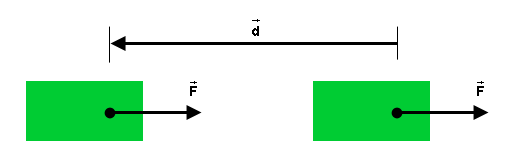

Contents
Page 1. General Remarks And Definition Of Work In One Dimension For A Constant Force
Page 2. Definition of Work In One, Two, Or Three Dimensions For A Constant Force
Page 3. Definition of Work For A Variable Force
Work: Generalities
Work is a transfer of mechanical energy to a system. Like energy, work is a scalar quantity. The SI-unit of work, like that of energy, is the joule (J).
When mechanical energy is being transferred to a system, one says that work is being done on the system. For work to be done on a system, there must be a force acting on the system, and one says that the force is doing work on the system. The work done by a force can be either positive, negative or zero. Positive work being done on a system means that energy is being added to the system, and negative work being done on the system means that energy is being taken away from the system.
Work done by a constant force: simplest case (one dimension)
Figure 1
Figure 1 illustrates a situation in which a constant
force  is acting on a green
block during a time interval during which the point (round
black dot) at which the force is acting on the block undergoes
a displacement
is acting on a green
block during a time interval during which the point (round
black dot) at which the force is acting on the block undergoes
a displacement  in the
direction of the force. The work W done on the block
by this force is defined as
in the
direction of the force. The work W done on the block
by this force is defined as
W = Fd,  (1)
(1)
i.e., as the product of the magnitude F of the force and the magnitude d of the displacement.
Figure 2 below illustrates a similar situtation, but this
time the block's displacement is opposite to the direction of
the force. (Several circumstances can make this possible.
E.g., the initial velocity of the block could be to the left
and the applied force might
be slowing the block down while the block continues moving
left. Or there could be other forces besides acting on the block that are not shown in
Figure 2 and are directed to the left.)

Figure 2
In this case, the work done by force on the block is defined as
W = -Fd,  (2)
(2)
i.e., as the negative of the expression in Equation (1).
Comment. The point at which the force is acting
plays a crucial role in this definition. It is the
displacement of this point
that matters in the definition of work, not the displacement
of the object. In the case of a rigid block that is not
rotating, the displacement of the point at which the force is
acting is also the displacement of the block itself and of
every part of the block. However, when a rigid object is
rotating or when an object is deformable and changing shape,
different parts of the object will undergo different
displacements.